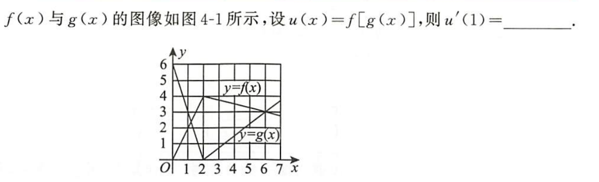

微分的计算框架
0
dx2=(dx)2
{f[g(x)]}′=dxd{f[g(x)]},f′[g(x)]=d[g(x)]d{f[g(x)]}
∂x∂F:考虑自变量之间的函数关系Fx′:不考虑自变量之间的函数关系
1 求导公式
1.0 定义法
导数定义的极限式可能通过条件提出函数表达式，剩下的极限部分趋于常数，组合出导函数:
x,y>0,f(xy)=f(x)y+xf(y)f′(x)=Δx→0limΔxf(x+Δx)−f(x)
f(x+Δx)=f[x(1+xΔx)]=f(x)(1+xΔx)+xf(1+xΔx)⇒Δxf(x+Δx)−f(x)=xf(x)+xΔxf(1+xΔx)⇒f′(x)=xf(x)+Δx→0limxΔxf(1+xΔx)=xf(x)+f′(1)
1.1 乘法的微分
1.1.1
d(uv)=du⋅v+u⋅dv
u,v为一元函数易根据导数乘法推导,u,v为多元函数也成立
1.1.2 乘法的n阶导数
(uv)(n)=k=0∑nCnku(n−k)v(k)
1.2 除法的微分
g=0,(gf)′=g2f′g−fg′
⇒d(vu)=v2du⋅v−u⋅dv
例子
1
dx⋅y−x⋅dy=y2dy
⇒d(yx)=dy⇒yx=y+c
2
[lnf(x)]′′=[f(x)f′(x)]′=f2(x)f′′(x)f(x)−[f′(x)]2
∴f′′(x)f(x)≥[f′(x)]2⇒y=lnf(x)凹
1.3 求导规则
- 计算f在x0处的导数,前提是f在x0邻域(包括x0)有定义
- 分段函数区间用求导公式,u,v分段点用定义
- 可导函数使用公式法无定义的点使用定义法单独求解
1.4 绝对值的导数
∣f(x)∣={f(x)−f(x)f(x)>0f(x)<0,∣f(x)∣′={f′(x)−f′(x)f(x)>0f(x)<0
1.5 变上限积分的导数
F(x)=∫0xf(t)dt,[F(φ(x))]′=F′(φ(x))⋅φ′(x)=f(φ(x))⋅φ′(x)
[∫φ1(x)φ2(x)f(t)dt]′=[F(φ2(x))−F(φ1(x))]′=f(φ2(x))⋅φ2′(x)−f(φ1(x))⋅φ1′(x)
1.6 图像的导数

$$
u'\left(1\right)=\left\{f\left[g\left(x\right)\right]\right\}_{x=1}^{'} = \frac{df\left[g\left(x\right)\right]}{dg\left(x\right)}_{g\left(x\right)=g\left(1\right)}\frac{dg\left(x\right)}{dx}_{x=1}
$$
g(1)=3,f′(3)=−41,g′(1)=−3⇒u′(1)=dg(x)df[g(x)]g(x)=3dxdg(x)x=1=43
2 求导方法
★2.1 反函数求导
已知导数值求反函数导数值
yx′=dxdy,xy′=dydx=yx′1
xyy′′=dy2d2x=dyddydx=dydyx′1=dxdyx′1dydx=−(yx′)3yxx′′
2.2 对数求导
y=f(x)=0⇒ln∣y∣=ln∣f(x)∣
⇒yy′=[ln∣f(x)∣]′⇒y′=y[ln∣f(x)∣]′
y′=y[ln∣f(x)∣]′与f(x)=elnf(x)都是变形利用对数化简函数表达式的方法
2.3 参数方程
y=y(x),{x=φ(t)y=ϕ(t)⇒dxdy=dtdϕdtdφ=ϕ′(t)φ′(t)
极坐标r=r(θ)可以转化为参数方程{x=rcosθy=rsinθ
2.4 高阶导数
2.4.1
求高阶导数是求f(n)(x)的通项,直接的方法是归纳
2.4.2
我们也可以利用乘法的n阶导数化简多项式求值由于多项式展开Cnku(n−k)v(k)后项数变多,化简的方向是使u/v高阶导数为0
2.4.3
还可知泰勒展开系数唯一确定,若已知f(x)=k=0∑nak(x−x0)k+o((x−x0)n),则可通过an=n!f(n)(x0)确定f(n)(x0)
2.4.4
基本高阶导数
1
y(n)=(x+n)ex
2
(x+a1)(n)=(−1)n⋅n!⋅(x+a)n+11
★3 多元函数求导
3.1
从全微分的角度可以逐层全微分展开再整理
dz=∂u∂zdu+∂v∂zdv,du=∂x∂udx+∂y∂udy,dv=∂x∂vdx+∂y∂vdy
从求偏导的角度可以根据到达自变量的路径写出偏导数
dz=∂x∂zdx+∂y∂zdy
∂x∂z=∂u∂z∂x∂u+∂v∂z∂x∂v,∂y∂z=∂u∂z∂y∂u+∂v∂z∂y∂v
例子
1
z=arctan(xy2),求∂x∂y∂2z∣(0,1)
zy′=1+(xy2)22xy,zyx′′=dxdzy′∣y=1=2dxd1+x2x∣x=0,zxy′′=zyx′′=2
2
f(u,v)有fu′+fv′=uvy=e−2xf(x,x)可以由此建立微分方程:y′=−2e−2xf(x,x)+e−2x⋅[f(x,x)]′
dxdf(u,v)=fu′⋅dxdu+fv′⋅dxdv=2fx′⇒dxdf(x,x)=fu′⋅dxdx+fv′⋅dxdx=fu′+fv′=uv=x2
⇒y′+2y=x2e−2x
3.2 高阶
对∀f的偏导数f(∗),∵f(∗)的中间变量,自变量未改变,∴f(∗)复合结构与f相同
故对f(∗)求导相当把复合函数结构图开始的换成f(∗)再按照结构图求导
3.3 嵌套
展开遇到参数为函数继续逐参数展开
f(x,y)二阶偏导数连续,f(1,1)=2是f极值,z=f[x+y,f(x,y)],求zxy′′∣(1,1)
zx′=f1′[x+y,f(x,y)]+f2′[x+y,f(x,y)]⋅f1′(x,y)
zxy′=∂y∂f1′[x+y,f(x,y)]+∂y∂f2′[x+y,f(x,y)]⋅f1′(x,y)+f2′[x+y,f(x,y)]⋅∂y∂f1′(x,y)∂y∂f1′[x+y,f(x,y)]=f11′′[x+y,f(x,y)]+f12′′[x+y,f(x,y)]f2′(x,y)∵f1′(1,1)=0∴∂y∂f2′[x+y,f(x,y)]⋅f1′(x,y)=0∂y∂f1′(x,y)=f12′′(x,y)
4 隐函数公式
4.1
隐函数解法:
- 直接求偏导
- 微分变形化简
- 代入公式
y=y(x),F(x,y)=0⇒dF=0
⇒dF(x,y)=∂x∂Fdx+∂y∂Fdy=0⇒Fx′+Fy′⋅y′=0⇒y′=−Fy′Fx′
★4.2 多元
已知z=z(x,y),F(x,y,z)=0,求∂x∂z,∂y∂z
∂x∂F=Fx′+Fz′⋅∂x∂z=0⇒∂x∂z=−Fz′Fx′,同理∂y∂z=−Fz′Fy′
*4.3 方程组
{F(x,y,z)=0G(x,y,z)=0⇒{y=y(x)z=z(x)
4.3.1 雅可比行列式
∂(x,y)∂(F,G)=∂x∂F∂x∂G∂y∂F∂y∂G,∂(y,x)∂(F,G)=∂y∂F∂y∂G∂x∂F∂x∂G=−∂(x,y)∂(F,G)
4.3.2
dxdy=−∂(y,z)∂(F,G)∂(x,z)∂(F,G),dxdz=−∂(z,y)∂(F,G)∂(x,y)∂(F,G)
代入公式求解∂x∂z,∂y∂z,dxdy,dxdz时,x,y,z独立